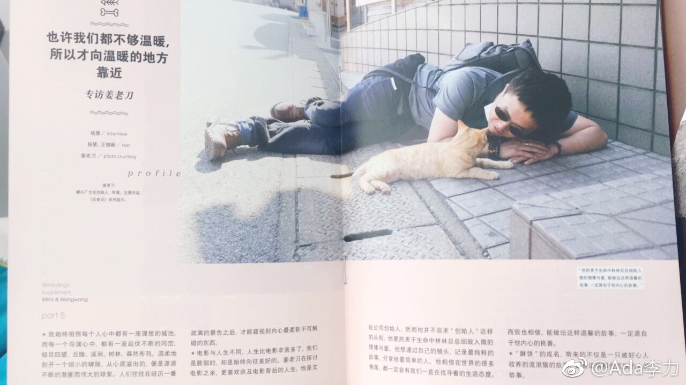

#创业#关注过不少美食视频账号，对日食记印象是最好的。但一直没琢磨清楚它对观众的吸引力在哪里？
今天翻到了一篇2015年的专访，姜老刀说做视频工作室的目的就是：希望有一个相亲相爱的团队。大家互相养着这个自留地，在吃饱喝足基础上，享受有限的人生。老了以后也能在一起，互相嘲笑一下曾经啼笑皆非的岁月，这样的人生就很棒。
因为工作室自己做饭，顺便拍摄记录制作，无心插柳地成就了日食记。而工作室开始时的主业是给甲方拍宣传片，
虽然日食记是个美食视频自媒体，但核心并不是美食本身，而是附着在美食上的人，人的故事，人的记忆和人的情感。这种情感并不浓烈，而是种带着温暖的小确幸。- 这是都市漂泊人的品味哈。
能拍出这么温暖视频的，本人一定是有着关爱他人的善意。
这是日食记区别其它美食视频的最大因素。很多美食内容，都是带着工具心理来做，我教你做什么什么？至少我看时基本无感，也就是当词典一样用，想做什么查一查，然后就丢到一边。其实看美食视频的观众，想要得更多。
美妆类视频，我还没看到有做得让人心动的。
今天翻到了一篇2015年的专访，姜老刀说做视频工作室的目的就是：希望有一个相亲相爱的团队。大家互相养着这个自留地，在吃饱喝足基础上，享受有限的人生。老了以后也能在一起，互相嘲笑一下曾经啼笑皆非的岁月，这样的人生就很棒。
因为工作室自己做饭，顺便拍摄记录制作，无心插柳地成就了日食记。而工作室开始时的主业是给甲方拍宣传片，
虽然日食记是个美食视频自媒体，但核心并不是美食本身，而是附着在美食上的人，人的故事，人的记忆和人的情感。这种情感并不浓烈，而是种带着温暖的小确幸。- 这是都市漂泊人的品味哈。
能拍出这么温暖视频的，本人一定是有着关爱他人的善意。
这是日食记区别其它美食视频的最大因素。很多美食内容，都是带着工具心理来做，我教你做什么什么？至少我看时基本无感，也就是当词典一样用，想做什么查一查，然后就丢到一边。其实看美食视频的观众，想要得更多。
美妆类视频，我还没看到有做得让人心动的。
- 